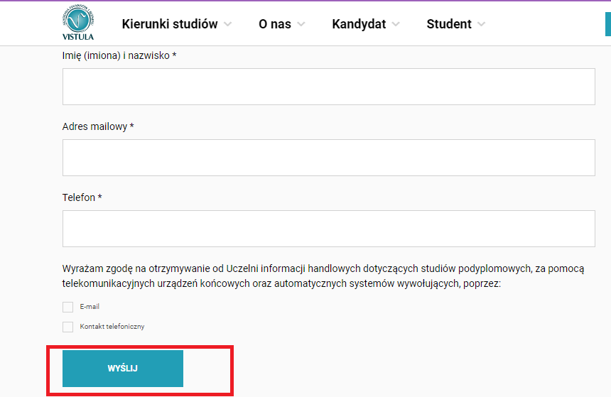

Rekrutacja na studia podyplomowe
3 sposoby zgłoszenia na studia
Pierwszy sposób
- Wejdź w zakładkę ‘Nabór i opłaty’ wybranego kierunku studiów podyplomowych
- Z zakładki pobierz formularz zgłoszeniowy – zamieszczony w wersji Word

- Formularz wydrukuj, wypełnij i podpisz. Skan lub wersję pdf wyślij na adres mailowy studiapodyplomowe@vistula.edu.pl
- Załącz skan dyplomu (licencjat lub magister każdego kierunku) w pdf oraz zdjęcie w jpg lub doślij dokumenty w terminie późniejszym, jednak nie później niż podany termin rozpoczęcia zajęć danego kierunku.
- Poczekaj na odpowiedź i potwierdzenie przyjęcia zgłoszenia od pracownika Działu Studiów Podyplomowych. Odpowiedź uzyskasz maksymalnie po dwóch dniach roboczych.
Drugi sposób
- Na stronie studiów podyplomowych, wybierz kierunek, który Cię interesuje
- Niezależnie, od zakładki, na której się znajdziesz, w prawym rogu, widoczna
będzie prostokątna ikona na czerwonym tle z napisem ‘APLIKUJ ONLINE’

- Wejdź w ikonę (lewy przycisk myszki) i wypełnij skrócony kwestionariusz osobowy, podając jedynie swoje imię i nazwisko, adres mailowy, numer telefonu oraz formę kontaktu ze strony uczelni. Zapoznaj się z informacją RODO i wybierz WYŚLIJ 
- Na tej samej stronie uczelni, otrzymasz natychmiast komunikat z podziękowaniem i
informacją o kontakcie ze strony uczelni.

- Poczekaj na odpowiedź i potwierdzenie przyjęcia zgłoszenia od pracownika Działu Studiów Podyplomowych. Odpowiedź uzyskasz maksymalnie po dwóch dniach roboczych.
Trzeci sposób
- Kandydat na studia podyplomowe, po wcześniejszym, mailowym lub telefonicznym kontakcie z Działem SP, może osobiście złożyć kwestionariusz zgłoszeniowy, xero dyplomu oraz zdjęcie.
- Forma tradycyjna zapisu na studia, jest możliwa po uprzednim umówieniu się, szczególnie w czasie trwającej pandemii.
Rekrutacja na studia podyplomowe w Akademii Finansów i Biznesu Vistula trwa cały rok kalendarzowy, w każdej wybranej formie zapisu.
Zdjęcie, które kandydat przekłada wraz z pozostałymi dokumentami nie musi posiadać szczególnego formatu, gdyż nie będzie wykorzystane w świadectwie.